Illustrations
Spot and hero illustrations from isomer.ai, plus ones marked Generated by Claude. 89 files.

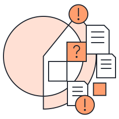
40-percentage-of-adjuser-time.svgNot used on the siteDownload SVG
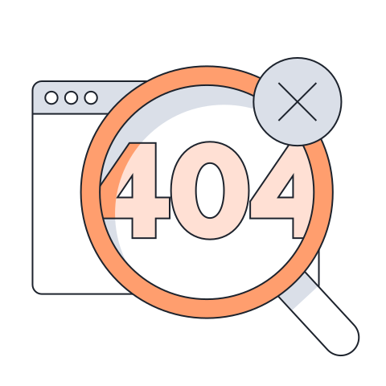
404.svgnot-foundDownload SVG
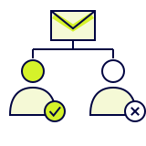
adjuster-variance.svgNot used on the siteGenerated by ClaudeDownload SVG
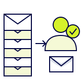
adjuster-workload.svgNot used on the siteGenerated by ClaudeDownload SVG
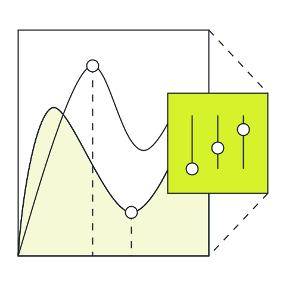
agentic-process-hero.svgplatform/agentic-process-automation, productsDownload SVG
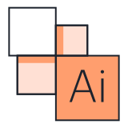
agentic-task-automation.svgcareersDownload SVG
attorney-representation.svgNot used on the siteGenerated by ClaudeDownload SVG
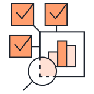
audit-learning.svgsolutions/invoice-validationDownload SVG
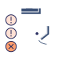
audit-trail.svgNot used on the siteDownload SVG
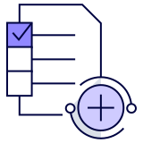
automated-execution.svgsolutions/fnol-intake, solutions/workers-comp-intakeDownload SVG
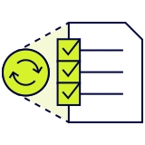
automated-routine-checks.svgsolutions/invoice-validationDownload SVG
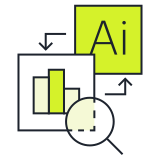
automating-claims-workflows.svgcareersDownload SVG
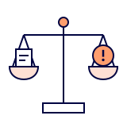
bad-faith-exposure.svgNot used on the siteGenerated by ClaudeDownload SVG
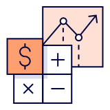
benefit-calculation.svgsolutions/policy-servicing, solutions/policy-validation, solutions/post-bind-reviewDownload SVG
build-maintenance.svgsovereign, supportDownload SVG
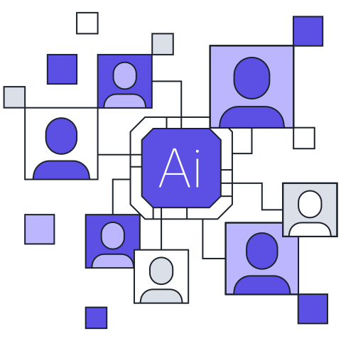
career-cta.svgcareers, careers/job-detailDownload SVG
catastrophe-surge.svgNot used on the siteGenerated by ClaudeDownload SVG
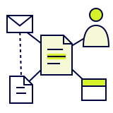
claim-graph.svgNot used on the siteGenerated by ClaudeDownload SVG
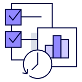
claim-history-analysis.svgsolutions/policy-servicing, solutions/policy-validation, solutions/post-bind-reviewDownload SVG
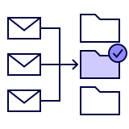
claim-matching.svgNot used on the siteGenerated by ClaudeDownload SVG
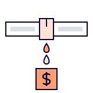
claims-leakage.svgNot used on the siteGenerated by ClaudeDownload SVG
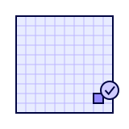
combined-ratio-point.svgNot used on the siteGenerated by ClaudeDownload SVG
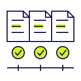
consistent-results.svgNot used on the siteGenerated by ClaudeDownload SVG
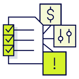
coverage-verification.svgsolutions/policy-servicing, solutions/policy-validation, solutions/post-bind-reviewDownload SVG
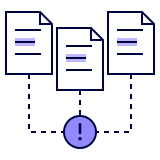
cross-claim-patterns.svgNot used on the siteGenerated by ClaudeDownload SVG
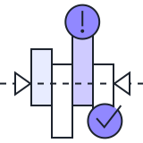
data-driven-insights.svgcareersDownload SVG
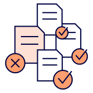
data-reconciliation.svgsolutions/policy-servicing, solutions/policy-validation, solutions/post-bind-reviewDownload SVG
day-zero.svgNot used on the siteGenerated by ClaudeDownload SVG
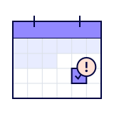
deadline-calendar.svgNot used on the siteGenerated by ClaudeDownload SVG
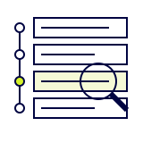
decision-audit-trail.svgNot used on the siteGenerated by ClaudeDownload SVG
dedicated-specialists.svgsupportDownload SVG
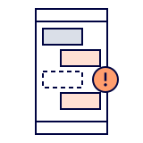
deleted-messages.svgNot used on the siteGenerated by ClaudeDownload SVG
direct-communication.svgsupportDownload SVG
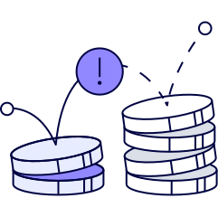
early-intervention.svghomeDownload SVG
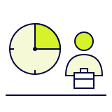
early-representation.svgNot used on the siteGenerated by ClaudeDownload SVG
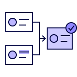
entity-resolution.svgNot used on the siteGenerated by ClaudeDownload SVG
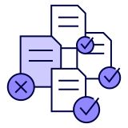
evidence-cross-check.svgsolutions/invoice-validationDownload SVG
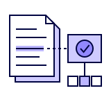
explainable-decision.svgNot used on the siteGenerated by ClaudeDownload SVG
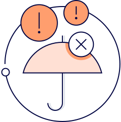
exposure-prevention.svghomeDownload SVG
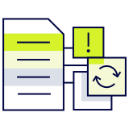
extraction-validation.svgsolutions/fnol-intake, solutions/workers-comp-intakeDownload SVG
fail-safe-exception-handling.svgplatform, products, solutions/fnol-intake, solutions/workers-comp-intakeDownload SVG
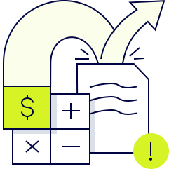
financial-leakage-icon.svghomeDownload SVG
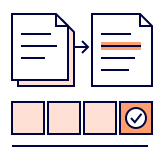
four-week-assessment.svgNot used on the siteGenerated by ClaudeDownload SVG
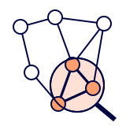
fraud-ring-detection.svgNot used on the siteGenerated by ClaudeDownload SVG
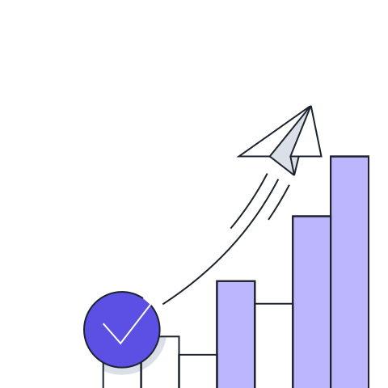
getting-started.svgplatform/agentic-process-automation, solutions/invoice-validationDownload SVG
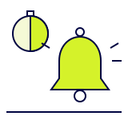
handler-alert.svgNot used on the siteGenerated by ClaudeDownload SVG
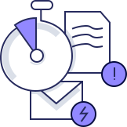
hidden-escalation-signal-icon.svghomeDownload SVG
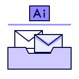
inbox-control-layer.svgNot used on the siteGenerated by ClaudeDownload SVG
inbox-labelling.svghome, platformDownload SVG
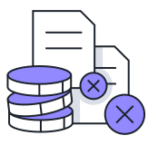
indemnity-leakage.svgNot used on the siteDownload SVG
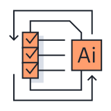
intelligent-underwriting-assistance.svgcareersDownload SVG
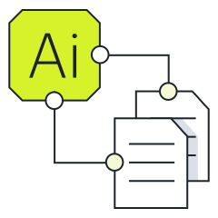
isomer-approach-1.svgplatform/agentic-process-automationDownload SVG
isomer-approach-2.svgplatform/agentic-process-automation, sovereignDownload SVG
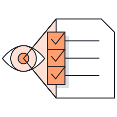
isomer-approach-3.svgplatform/agentic-process-automationDownload SVG
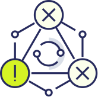
isomer-is-different.svghome, productsDownload SVG
leakage-manual-risk.svgsolutions/invoice-validationDownload SVG
legal-advertising.svgNot used on the siteGenerated by ClaudeDownload SVG
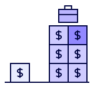
litigated-claim-cost.svgNot used on the siteGenerated by ClaudeDownload SVG
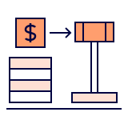
litigation-funding.svgNot used on the siteGenerated by ClaudeDownload SVG
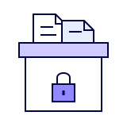
litigation-hold.svgNot used on the siteGenerated by ClaudeDownload SVG
manual-bottleneck.svgsolutions/fnol-intake, solutions/workers-comp-intakeDownload SVG
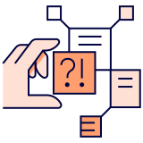
manual-interpretation.svgsolutions/policy-servicing, solutions/policy-validation, solutions/post-bind-reviewDownload SVG
medical-bill-review.svgNot used on the siteGenerated by ClaudeDownload SVG
missed-obligations-icon.svghome, solutions/fnol-intake, solutions/workers-comp-intakeDownload SVG
multichannel-intake.svgNot used on the siteGenerated by ClaudeDownload SVG
no-ai-training.svgsovereignDownload SVG
not-another-workflow-automation-icon.svghome, supportDownload SVG
open-claims-layer.svgNot used on the siteGenerated by ClaudeDownload SVG
operational-assurance.svghome, platform, products and 2 moreDownload SVG
plaintiff-ai.svgNot used on the siteGenerated by ClaudeDownload SVG
prefooter.svghome, platform, productsDownload SVG
reserve-adequacy.svgNot used on the siteGenerated by ClaudeDownload SVG
response-automation.svghomeDownload SVG
rising-loss.svgNot used on the siteDownload SVG
seamless-compliance-reporting.svgcareers, products, sovereignDownload SVG
signal-library.svgNot used on the siteGenerated by ClaudeDownload SVG
signal-not-noise.svghomeDownload SVG
signals-clock.svgsolutions/fnol-intake, solutions/policy-servicing, solutions/policy-validation and 3 moreDownload SVG
single-tenant.svgplatform, products, sovereign, trustDownload SVG
smart-notification.svghomeDownload SVG
smart-triage.svgplatform, solutions/invoice-validation, sovereignDownload SVG
soc-2.svgplatform, products, trustDownload SVG
social-inflation.svgNot used on the siteGenerated by ClaudeDownload SVG
solutions-hero.svgsolutions/signalsDownload SVG
solutions-signals-cases.svgsolutions/signalsDownload SVG
subrogation-recovery.svgNot used on the siteGenerated by ClaudeDownload SVG
time-limited-demand.svgNot used on the siteGenerated by ClaudeDownload SVG
vendor-ai-responsibility.svgNot used on the siteGenerated by ClaudeDownload SVG
workflow-triggers.svghomeDownload SVGIcons
Signal category and capability icons, drawn on a 24px grid. 8 files.

complex-and-emerging.svgsolutions/signalsDownload SVG
compliance.svgsolutions/signalsDownload SVG
financial-and-coverage.svgsolutions/signalsDownload SVG
fraud-and-abuse.svgplatform/agentic-process-automation, solutions/signalsDownload SVG
invoice-validation.svgplatform/agentic-process-automationDownload SVG
legal-bad-faith.svgsolutions/signalsDownload SVG
medical-and-injury.svgsolutions/signalsDownload SVG
policy-coverage.svgplatform/agentic-process-automationDownload SVGPatterns
Cross patterns that frame page heroes and sections. 8 files.

left-cross-pattern-1.svgabout, careers, home and 7 moreDownload SVG
left-cross-pattern-2.svgcareers, home, platform and 9 moreDownload SVG
left-cross-pattern-3.svgsolutionsDownload SVG
right-cross-pattern-1.svgabout, careers, home and 12 moreDownload SVG
right-cross-pattern-2.svgcareers, home, platform and 2 moreDownload SVG
right-cross-pattern-3.svgplatform/agentic-process-automation, solutions, solutions/fnol-intake and 5 moreDownload SVG
right-cross-pattern-light.svghome, platform, platform/agentic-process-automation and 2 moreDownload SVG
right-pattern-4.svgsolutionsDownload SVGNothing matches that search.